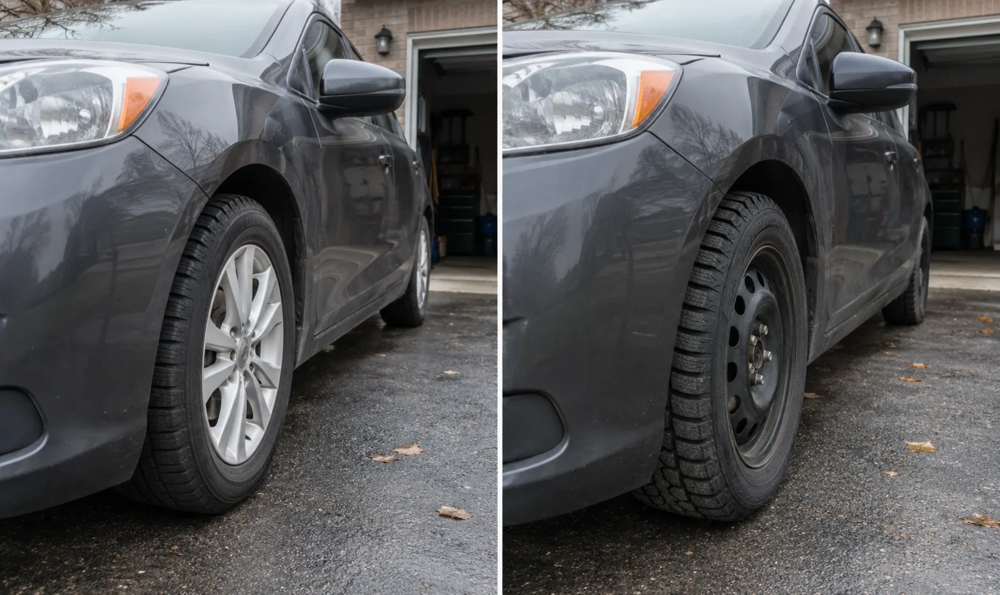

Mounted on rims
This service is for seasonal tire sets already installed on compatible wheels or rims.
Seasonal tire service
Seasonal wheel and tire swaps for winter or summer sets that are already mounted on rims. Jaden can come to a suitable driveway, home, workplace, or vehicle location after confirming the details.
416-577-8237jadensauthoanddetailing@gmail.com
Before booking
This service is for seasonal tire sets already installed on compatible wheels or rims.
Send the year, make and model so Jaden can confirm the request and appointment needs.
The vehicle needs firm, level space with enough room to lift and work safely around each wheel.
Useful checks
Mobile or shop
Mounted seasonal wheel swaps are often practical at your location. If the tires are not mounted on rims, the surface is unsafe, or another wheel or tire concern needs equipment, Jaden will explain the appropriate next step.
Request an appointment
Include the vehicle’s year, make and model, location, whether the seasonal tires are mounted on rims, and any tire-pressure light, vibration, or visible damage.
Request a quote
Call or text with the vehicle, tire setup, and location.